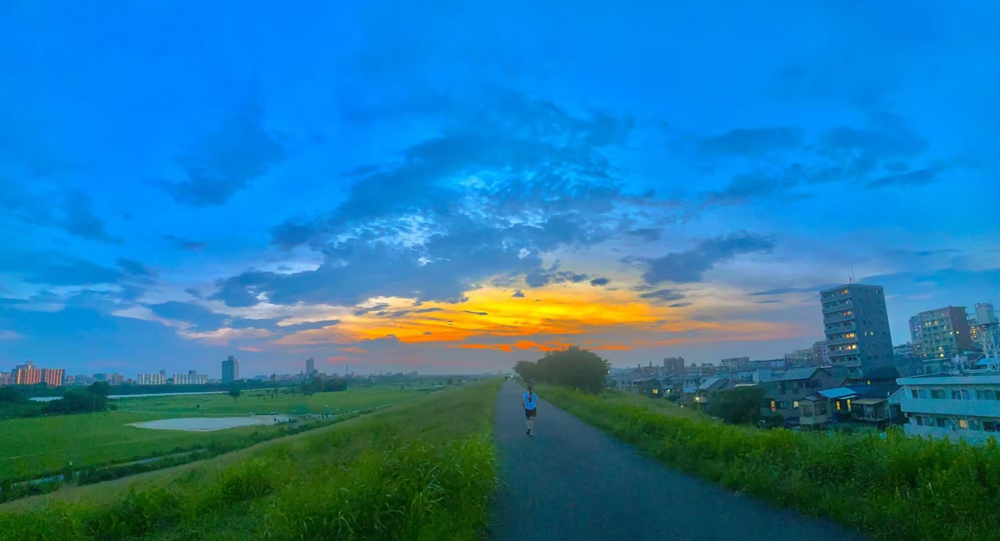
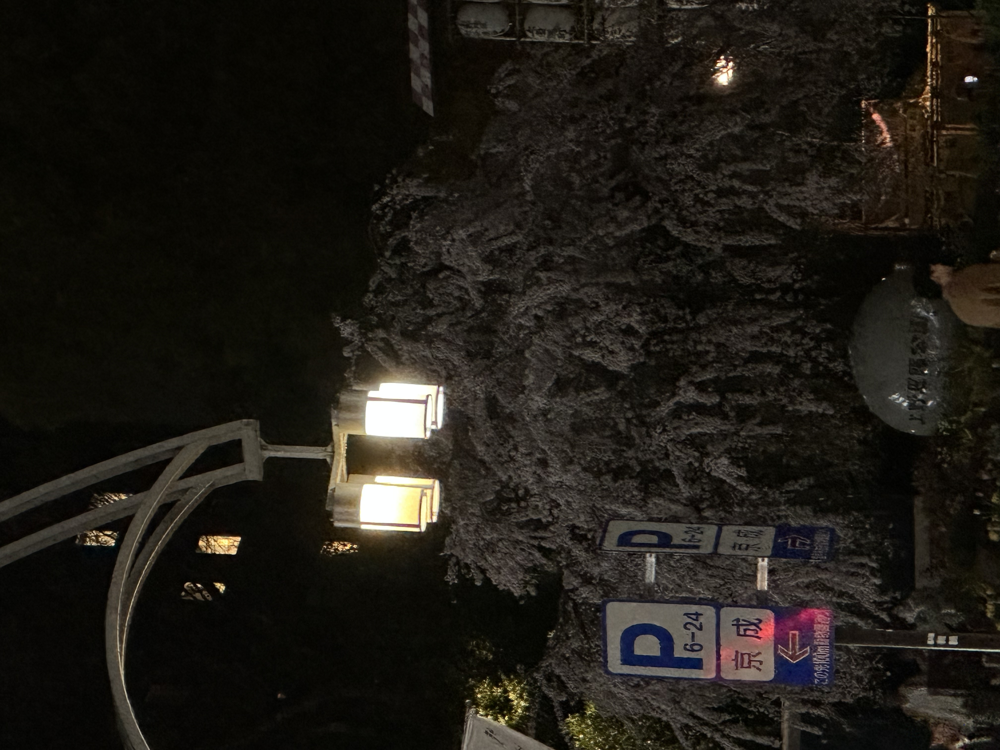
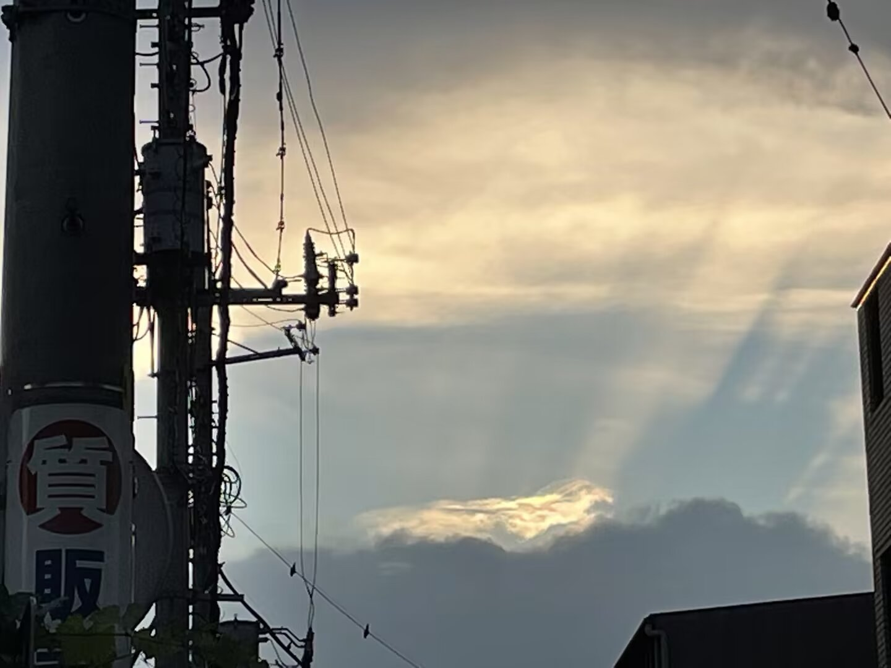
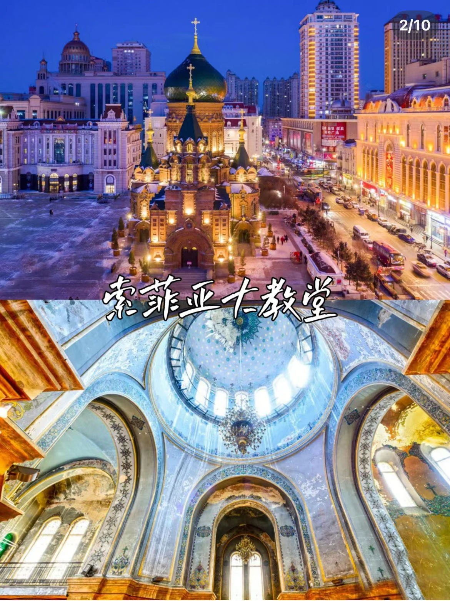
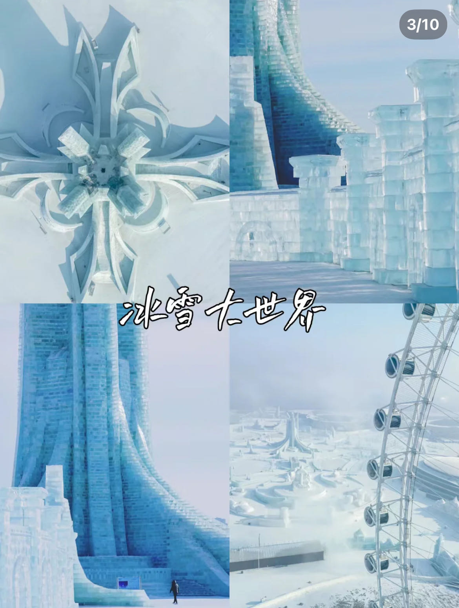
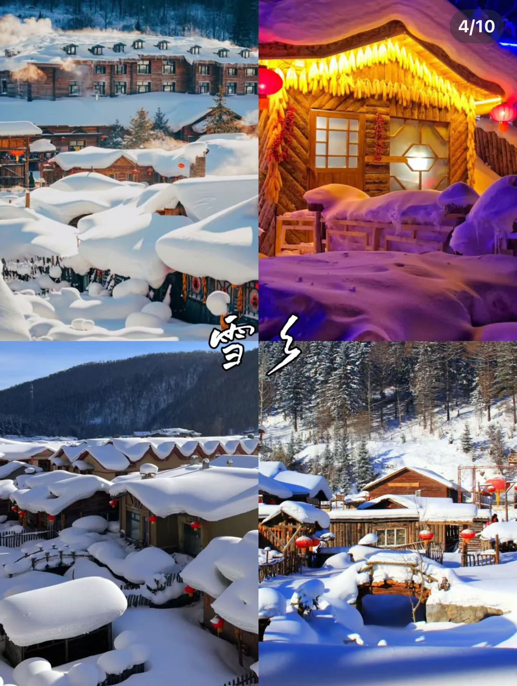
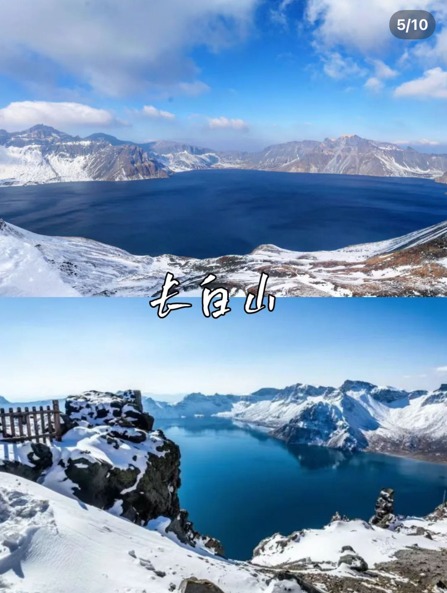
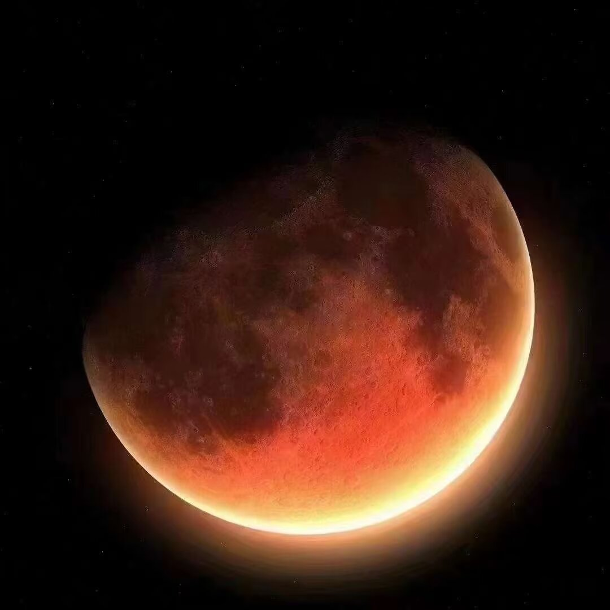

私の故郷を見てください。
ハルピンは別名「氷都」。 北東アジアの中心に位置し、「ユーラシア大陸橋の真珠」として知られている。 また、ハルピンは中国の省級市の中で最大の面積と2番目の人口を誇る巨大都市でもある。 ハルビンは多文化が融合した都市であり、有名な歴史文化都市として、長い歴史文化遺産と豊富な歴史的遺物がある。 人文景観と歴史的価値において、中国の有名な歴史的首都とは比較にならないが、特殊な地理的、歴史的条件により、近代に形成されたこの都市は、独特な個性を備えている。
       